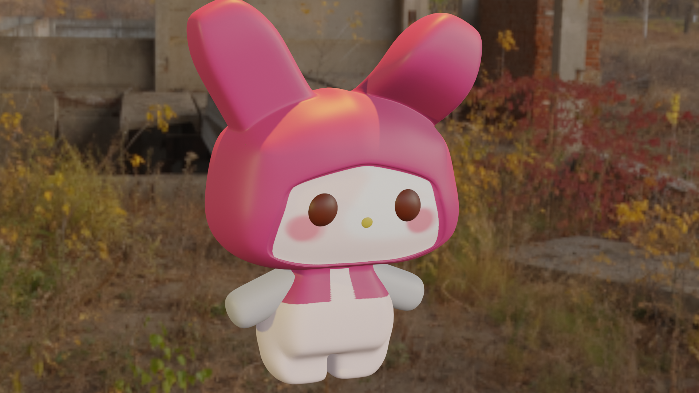

MODELADOS 3D
My Melody
Fue de mis primeras creaciones en Blender, es uno de mis personajes favoritos, por lo tanto quise hacer el intento de plasmarlo de una manera 3D.
Software utilizado: Blender
Muñequita

Modelado de una muñequita ya creada; este ha sido uno de mis modelados favoritos, se basa a mi tipo de estetica y me parecio muy entretenido realizarla.
Software utilizado: Blender
Cafeteria
Modelado de un intento de cafeteria, fue de las casitas que intente realizar por primera vez, me ha fallado un poco la colocacion de luces, pero se me ha hecho de las mas sencillas y lindas a la vez.